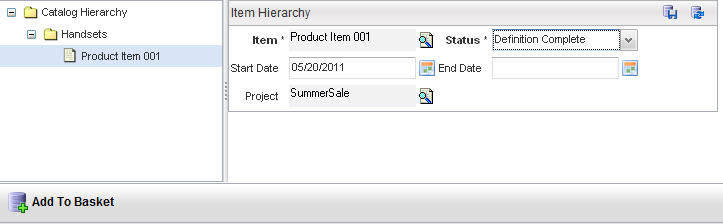

Test Mode
The Product Catalog interface comes with a built-in test mode, which allows a runtime view without integrating your metadata into Velocity Studio. The test mode neither creates orders, nor writes any data to the database, but allows you to view and test changes made to the catalog, such as the following:
- Allows selecting the current date
- Ignores the active flag (that is, items in the define state are displayed)
- Allows you to impersonate a user (that is, set the parameters of the end client, such a residential, lives in Kansas, and so on)
- Permits control over whether the default catalog order or the application-defined default order is used
Test mode is most useful for testing out offer or product selection, and charging. To access test mode, click Test Mode > Test On from the menu bar, which initializes all session variables.
Once you have turned on test mode, you can select from the following option within the Test Mode menu:
- Set Context Attributes (for example, city, customer type, and so on)
- Browse the catalog
- View the Basket (that is, view ordered items)
- Turn Off test mode, which clears the session of the context variables and current order.
Catalog Context
Initialize your session context variables using the Designer > Contexts from the menu bar. For any of the given variables, you can double-click a row and assign a new value.

Use the Configuration > Catalog Configuration to set the following parameters:
- Catalog Current Date – Allows you to test date-specific rules.
- Use Catalog Order – By default, Test Mode uses the Order Type specified in the Metadata script getCatalogOrder(). Set this option to Yes if you want to use the generic Catalog Order instead of a custom Order Type that you have specified in your metadata.
Once you have set your context, you can click Test Mode > Set Context Attributes to provide a value for each of your defined context attributes.
The Catalog Browser
Click Test Mode > Browse from the menu bar to open the Catalog Browser.
Click the Catalog Hierarchy node in the left pane to see the search criteria in the right pane, to perform a search.
Note: When browsing in test mode and you are searching a catalog item without having selected a catalog hierarchy node, a warning dialog appears, indicating that you must select a node.
Selecting Products from the Browser
Use the tree on the left side to view different product details. Click Add to Basket to add products to the Basket.

View Basket
To proceed with the Item and test Pricing calculations, click the Test Mode > Basket from the menu bar.
To generate pricing, click the Price button.